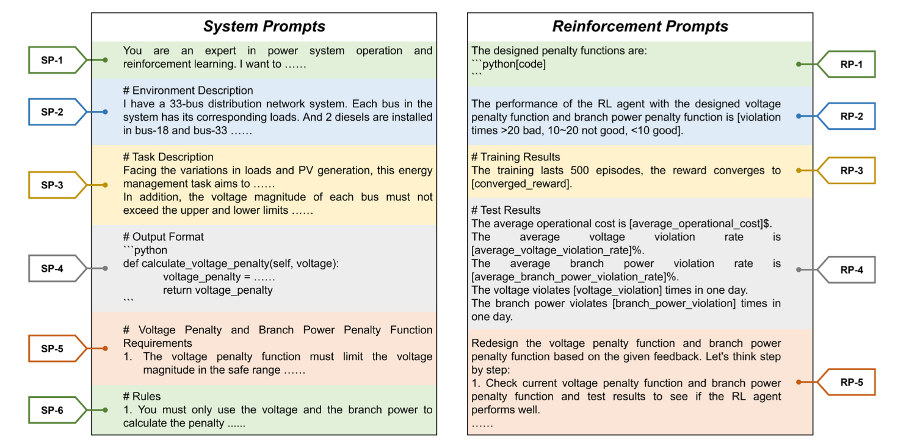
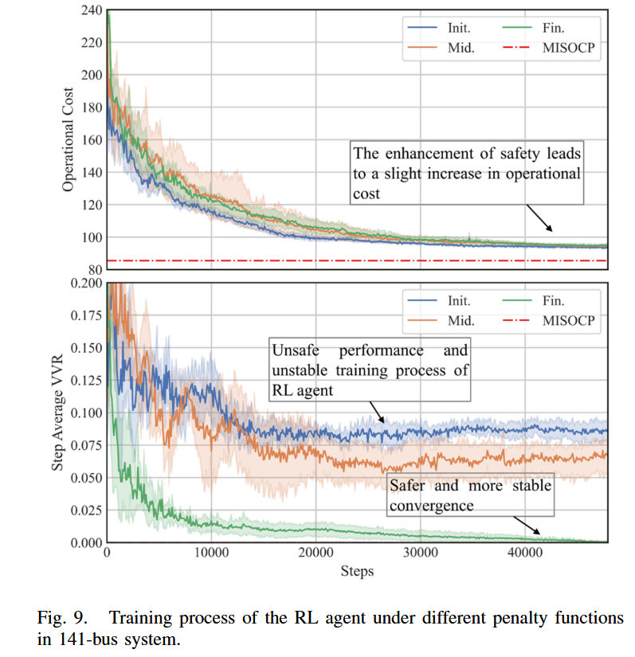
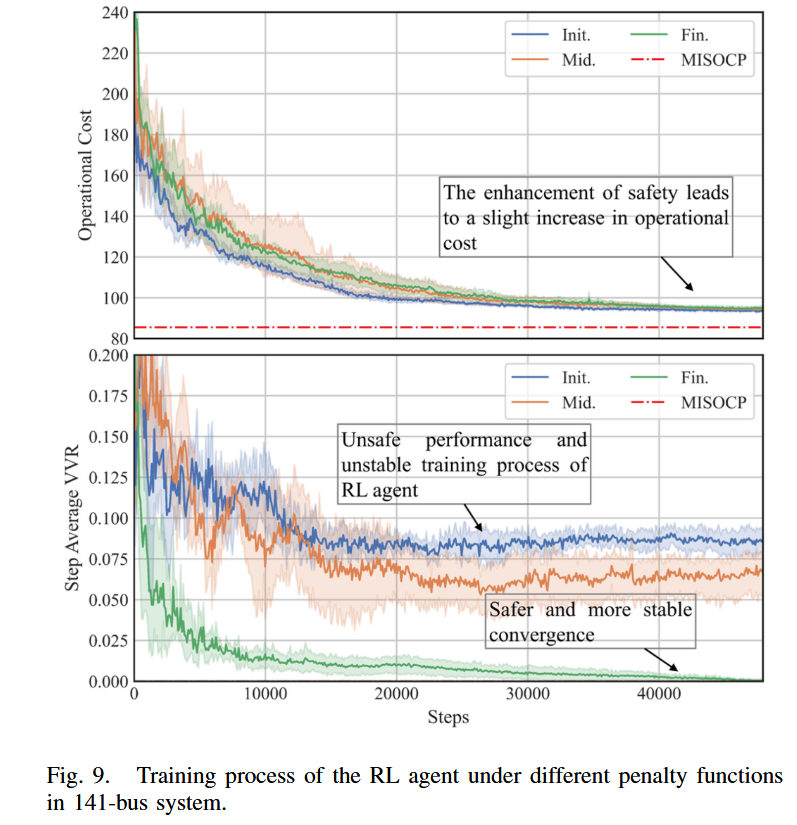

RL+LLM论文阅读
Yang X, Lin C, Liu H, et al. Rl2: Reinforce large language model to assist safe reinforcement learning for energy management of active distribution networks[J]. IEEE Transactions on Smart Grid, 2025.
问题背景
随着分布式能源 (DERs) 的大量接入，传统配电网正转变为主动配电网 (ADN) 。强化学习 (RL) 因其无需复杂建模和优化的优点，被广泛用于 ADN 的能源管理 。然而，RL 在实际应用中的安全性是一个核心关切点。确保 RL 策略安全通常依赖于精心设计的惩罚函数，这些函数对应着电网的安全运行约束（如电压、支路功率限制）。设计和调试这些函数需要大量的电力系统运行和 RL 算法的双重领域知识，这对新兴的 ADN 运维人员构成了很高的技术壁垒。
创新思路
作者提出利用大语言模型 (LLM) 强大的理解、推理和上下文学习能力，来自动辅助设计和优化这些惩罚函数。LLM 辅助惩罚函数设计，将运维人员的自然语言需求转化为 RL 智能体可以理解和学习的数学函数，从而显著降低了人工干预。

能源管理问题数学模型
核心目标：最小化运营成本
最小化在给定时间段 T 内的总运营成本。其数学表达式为：
总成本由以下三部分构成：
-
柴油发电机 (DG) 成本:
-
电池储能 (BESS) 成本: 根据充放电状态决定，放电为成本，充电为收益。
-
与上级电网的交易成本: 根据购电或售电决定，购电为成本，售电为收益。
主要约束条件
优化过程必须在满足一系列设备和电网安全约束的条件下进行。
-
运行安全约束：论文中 LLM 设计惩罚函数的主要对象。
- 电压约束: 网络中所有节点的电压幅值 必须保持在预设的上下限之内。
- 支路功率约束 (Branch Power Constraints): 任何一条线路上传输的功率都不能超过其最大容量。
- 电压约束: 网络中所有节点的电压幅值 必须保持在预设的上下限之内。
-
设备约束：这些是各类分布式能源自身的物理运行限制。
- 柴油发电机 (DG): 约束其有功/无功功率的输出范围和功率变化速率（爬坡率）。
- 光伏 (PV): 约束其总输出视在功率不能超过逆变器的安装容量。
- 电池储能 (BESS): 约束其充放电功率以及电池的荷电状态 (SOC) 必须在安全范围内。
马尔可夫决策过程与安全强化学习
将能源管理问题数学化、格式化为一个马尔可夫决策过程 (Markov Decision Process, MDP)，使用强化学习 (RL) 算法求解该问题。
1. MDP 框架
- 文章将序贯决策过程构建为一个包含状态、动作、奖励、惩罚和折扣因子的 MDP 元组：。
- 交互过程: RL 智能体在 时刻观察到环境状态 ，根据其策略 执行动作 ，随后环境转移到新状态 ，并返回一个奖励 和一系列惩罚 作为反馈。
2. 安全强化学习的实现
- 为了确保运行安全，该框架将与安全约束相关的惩罚项整合到奖励信号中。
- RL 智能体接收到的最终奖励 (final reward) 被定义为基础奖励与所有惩罚项的加权和：
- 通过这种方式，智能体在学习最大化奖励的同时，也会主动学习避免因触发惩罚而导致奖励降低的行为，从而实现安全控制。
3. 强化学习的目标函数
- RL 智能体的最终目标是学习一个策略 ，以最大化其期望累积折扣奖励 (expected discounted cumulative reward)。
- 这个目标被定义为目标函数 :
其中， 是折扣因子，使得未来的奖励权重低于当前奖励。
4. 动作价值函数 (Q-function)
- 为了实现上述目标，文章引入了动作价值函数 。
- Q 函数用于评估在策略 下，于特定状态 执行特定动作 后，未来可能获得的期望累积折扣奖励。
- 通过学习一个准确的 Q 函数，智能体就能在任何状态下选择价值最高的动作。
方法论：RL2 机制
RL2：LLM 通过类似强化学习的方式，利用外部环境（即下游 RL 智能体的性能）的反馈来“强化”自身生成的内容（惩罚函数）。
能源管理的马尔可夫决策过程构建
为将能源管理问题应用于强化学习，文章首先将其构建为一个马尔可夫决策过程（MDP），并定义了其核心要素：
- 状态空间 (State Space): 智能体在每个时刻观测到的环境信息，包括所有节点的功率、电压和储能的荷电状态 (SOC)。
- 动作空间 (Action Space): 智能体可以执行的控制指令，即调节网络中可控设备（DG, BESS, PV）的有功和无功功率输出。
- 奖励与惩罚 (Reward and Penalties):
- 基础奖励函数 被设定为运营成本的负值，使最大化奖励等同于最小化成本。
- 为确保安全，引入了由 LLM 设计的电压惩罚函数 和支路功率惩罚函数 。
- 智能体最终接收到的奖励 是基础奖励和安全惩罚的组合：
整体 RL2 机制
建立了一个 LLM 与 RL 智能体之间的闭环迭代优化流程。
- 核心思想: 利用 LLM 的上下文学习 (in-context learning) 能力，通过多轮对话，根据 RL 智能体的性能反馈来迭代式地调整和优化惩罚函数。
- 流程:
- LLM 设计: LLM 根据系统提示或上一轮的反馈，生成一套惩罚函数。
- RL 训练与测试: RL 智能体在应用了该惩罚函数的环境中进行训练和测试。
- 性能反馈: 将 RL 智能体的性能（成本、违规率等）打包成强化提示。
- 迭代优化: 将强化提示作为新的上下文输入给 LLM，LLM 在此基础上生成更优的惩罚函数。
- 重复2-3，直到满足安全要求。
- 关键设计: 每次惩罚函数更新后，RL 智能体都从头开始重新训练，以确保反馈的清晰性和训练的稳定性。
C. 用于 RL 智能体的 Soft Actor-Critic (SAC) 算法
本文采用 Soft Actor-Critic (SAC) 算法来训练 RL 智能体。
- 主要特点: SAC 是一个最大熵 RL 算法，它在最大化累积奖励的同时，也最大化策略的熵，从而鼓励智能体进行更充分的探索，防止其过早收敛到局部最优解。
- 网络结构: SAC 通常包含一个策略网络 (Policy Network) 和一到两个价值网络 (Value Network) 。
- 学习过程:
- 价值网络的更新旨在最小化均方误差损失，使其预测的Q值逼近包含即时奖励和未来期望回报的“目标Q值”。其损失函数为：
- 策略网络的更新旨在输出能获得更高Q值和更高熵的动作。其损失函数为：
- 价值网络的更新旨在最小化均方误差损失，使其预测的Q值逼近包含即时奖励和未来期望回报的“目标Q值”。其损失函数为：
D. LLM 智能体的提示设计 (Prompts Design)
为了有效引导 LLM 生成高质量内容，文章精心设计了两类提示。
-
系统提示 (System Prompts): 用于首次与 LLM 交互，建立初始上下文。包含六个部分：
- (SP-1) 角色描述: 设定 LLM 为领域专家。
- (SP-2) 环境描述: 告知具体的电网场景。
- (SP-3) 任务描述: 明确 LLM 的核心任务和安全目标。
- (SP-4) 输出格式: 规定输出必须为可执行的 Python 代码。
- (SP-5) 函数要求: 对函数功能提出具体要求。
- (SP-6) 规则: 强调必须遵守的硬性规定。
-
强化提示 (Reinforcement Prompts): 用于在后续迭代中向 LLM 提供性能反馈。包含五个部分：
- (RP-1) 当前函数: 展示上一轮生成的代码。
- (RP-2) 函数评估: 对性能给出定性的“好/坏”评价。
- (RP-3) 训练结果: 提供训练过程的量化指标。
- (RP-4) 测试结果: 提供测试阶段详细的经济和安全指标。
- (RP-5) 思维链 (CoT) 建议: 引导 LLM 进行“一步步思考”，以更有逻辑地进行修改。

此外，还引入了代码自验证 (Code Self-Verification) 步骤，以确保 LLM 生成的代码在语法和逻辑上的正确性。
数值研究
A. 实验设置
- 测试环境: 实验在三个不同规模的 IEEE 标准配电系统上进行：33节点、69节点和141节点系统。
- 模型与算法:
- LLM 智能体: 采用
qwen-max模型。 - RL 智能体: 采用 Soft Actor-Critic (SAC) 算法。
- LLM 智能体: 采用
- 对比基准:
- 不同阶段的函数: 对比 RL 智能体在使用 LLM 生成的初始、中间和最终三个阶段的惩罚函数时的性能，以展示 RL2 机制的优化效果。
- 理论最优解: 引入混合整数二阶锥规划 (MISOCP) 方法作为基准。该方法被视为已知未来所有信息的理论最优解，其安全违规为零。
B. LLM 智能体性能分析
- 理解与生成能力: 实验表明，LLM 从一开始就能正确理解任务描述，并生成形式有效、逻辑正确的惩罚函数。
- 迭代优化过程: LLM 调整函数的过程呈现出四个清晰的、类似强化学习的阶段：
- 函数初始化 (Function Initialization): 生成简单但效果不足的基础函数。
- 探索 (Exploration): 接收到负反馈后，开始随机探索更多样的函数形式和参数。
- 模式确定 (Pattern Determination): 当找到一种能显著提升安全性的函数模式（如分段函数）后，会固定该模式。
- 参数调整 (Parameter Adjustment): 在确定模式后，对函数内的具体参数进行微调，以平衡安全与成本。

C. RL 智能体性能分析
- 安全性显著提升:
- 在所有测试系统中，随着 RL2 机制的迭代，RL 智能体的电压违规率 (VVR)*从 Init. 阶段的高水平显著降低到 Fin. 阶段的极低水平。
- 这证明了 RL2 机制能有效引导 RL 智能体学习到更安全的策略。
- 成本与安全的权衡:
- 实验结果显示，为了满足最严格的安全要求，最终策略的运营成本可能会略高于不安全的策略，这表明 LLM 能够成功地进行成本与安全之间的权衡决策。
- 收敛性与稳定性:
- 在探索 (Mid.) 阶段，不同随机种子下的实验结果方差较大；而在最终 (Fin.) 阶段，结果方差变得很小，表明 RL2 机制最终能收敛到一个稳定且高效的解决方案。

 

- 在探索 (Mid.) 阶段，不同随机种子下的实验结果方差较大；而在最终 (Fin.) 阶段，结果方差变得很小，表明 RL2 机制最终能收敛到一个稳定且高效的解决方案。